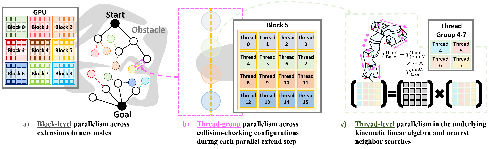
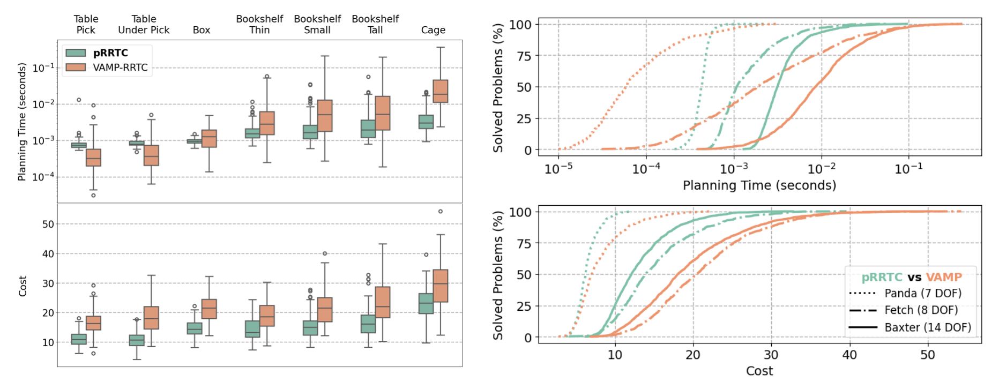
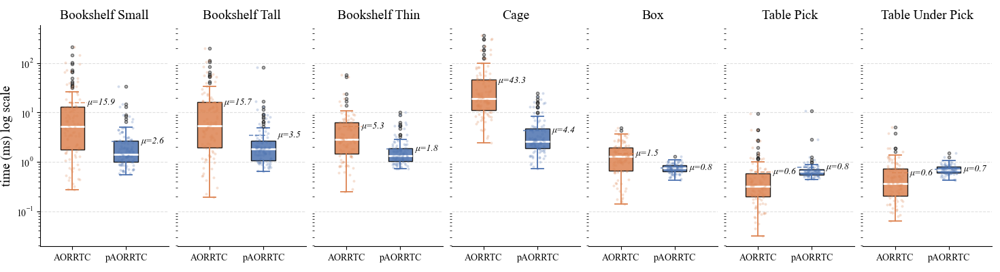
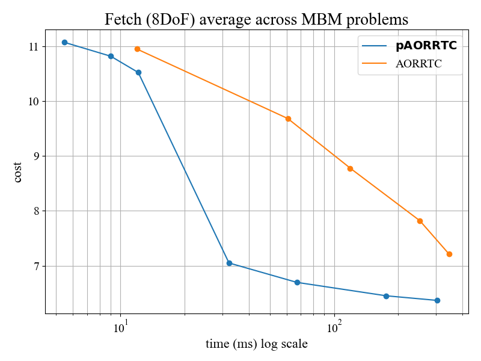

Sampling-based motion planning algorithms, like the Rapidly-Exploring Random Tree (RRT) and its widely used variant, RRT-Connect, provide efficient solutions for high-dimensional planning problems faced by real-world robots. However, these methods remain computationally intensive, particularly in complex environments that require many collision checks. To improve performance, recent efforts have explored parallelizing specific components of RRT such as collision checking, or running multiple planners independently. However, little has been done to develop an integrated parallelism approach, co-designed for large-scale parallelism.
In this work we present pRRTC, a RRT-Connect based planner co-designed for GPU acceleration across the entire algorithm through parallel expansion and SIMT-optimized collision checking. We evaluate the effectiveness of pRRTC on the MotionBenchMaker dataset using robots with 7, 8, and 14 degrees of freedom (DoF). Compared to the state-of-the-art, pRRTC achieves as much as a 10× speedup on constrained reaching tasks with a 5.4× reduction in standard deviation. pRRTC also achieves a 1.4× reduction in average initial path cost. Finally, we deploy pRRTC on a 14-DoF dual Franka Panda arm setup and demonstrate real-time, collision-free motion planning with dynamic obstacles. We open-source our planner to support the wider community.
On the high-level, pRRTC constructs two search trees in parallel. At the mid-level, pRRTC runs hundreds of parallel RRT-Connect iterations asynchronously across both trees. At the low-level, pRRTC parallelizes forward kinematics tracing, discretized edge collision checking, and nearest neighbors search.

When benchmarked against the CPU-based SIMD-accelerated VAMP-RRTC, pRRTC achieves as much as a 10x speedup in planning time (left). pRRTC also shows increasing benefit for systems of higher dimension (right).

@article{huang2025prrtc,
title={prrtc: Gpu-parallel rrt-connect for fast, consistent, and low-cost motion planning},
author={Huang, Chih H and Jadhav, Pranav and Plancher, Brian and Kingston, Zachary},
journal={arXiv preprint arXiv:2503.06757},
year={2025}
}
pRRTC has been paired with the AO-X meta-algorithm for almost-surely asymptotically-optimal planning. We plan to release the planner in September 2026.
The pRRTC-based optimizing planner has been tentatively named pAORRTC, and this is in contrast with the CPU-based SIMD-accelerated AORRTC planner (which will also be at ICRA 2026!).
Result 1: pAORRTC vs AORRTC in terms of time to initial solution on the 8-DoF Fetch MotionBenchMaker dataset.

Result 2: pAORRTC vs AORRTC in terms of optimization time and path cost on the 8-DoF Fetch MotionBenchMaker dataset.
